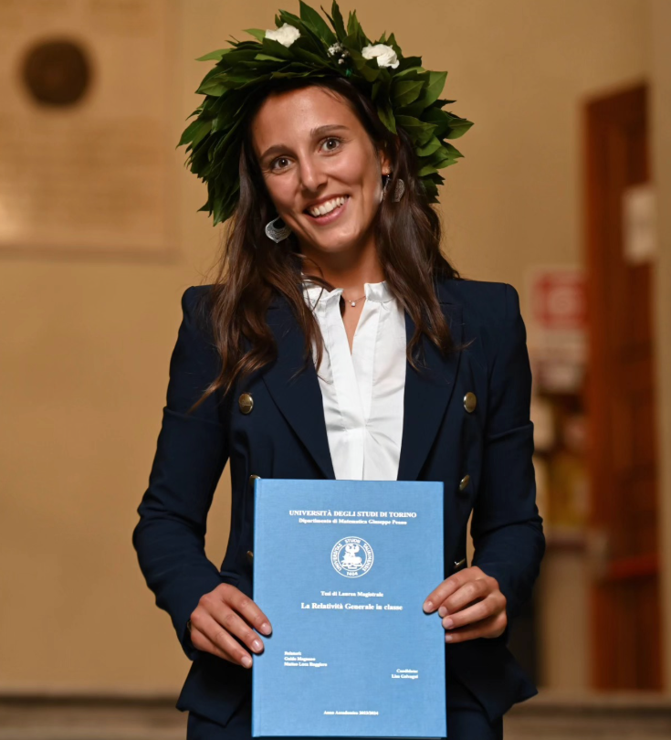
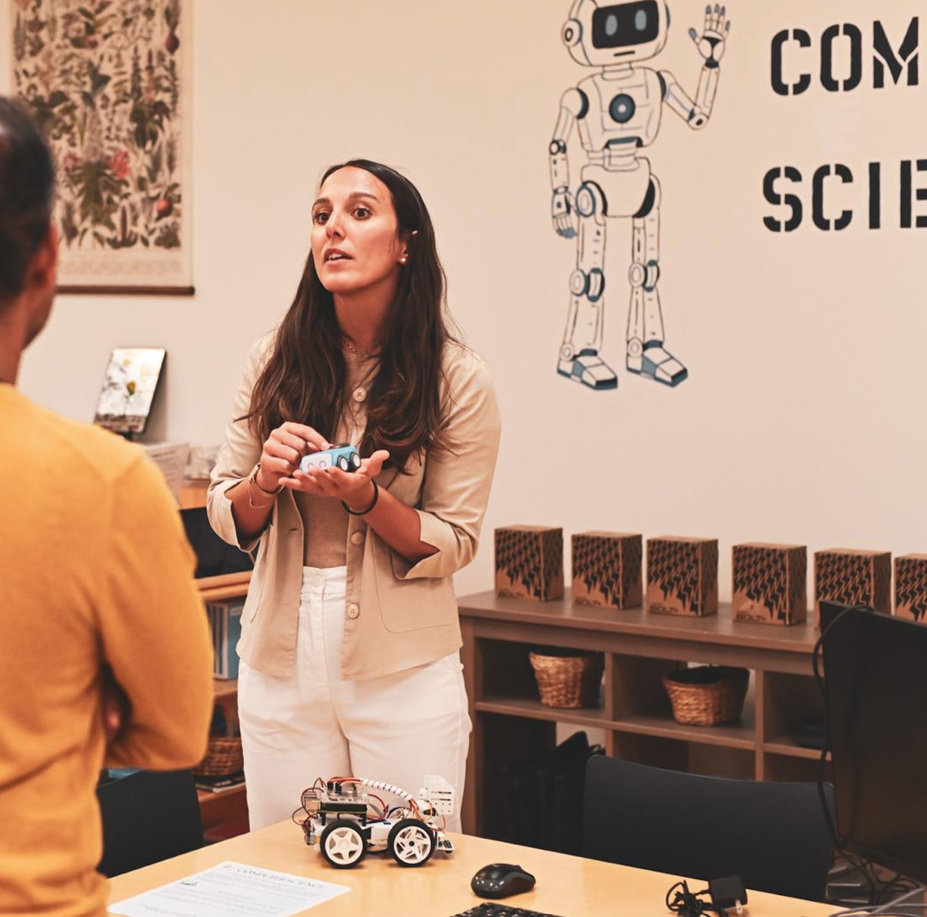
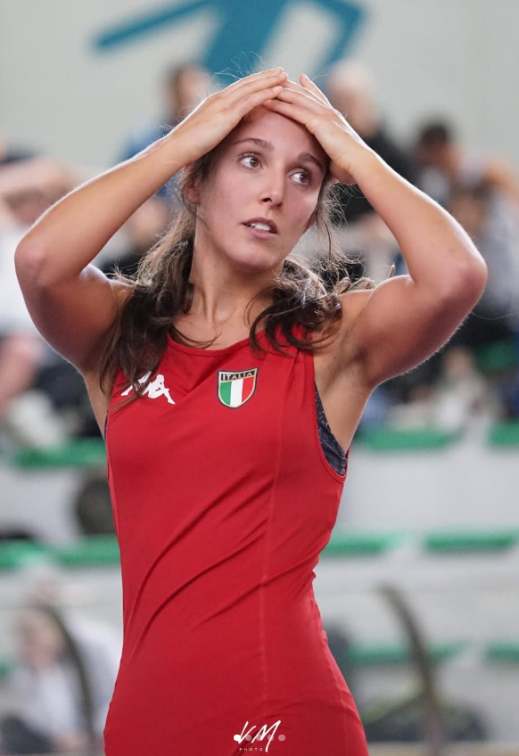
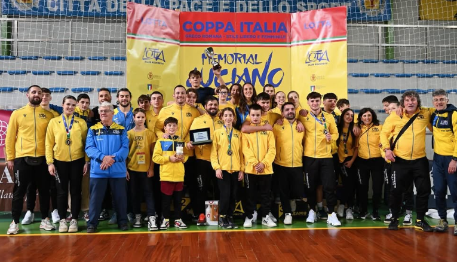
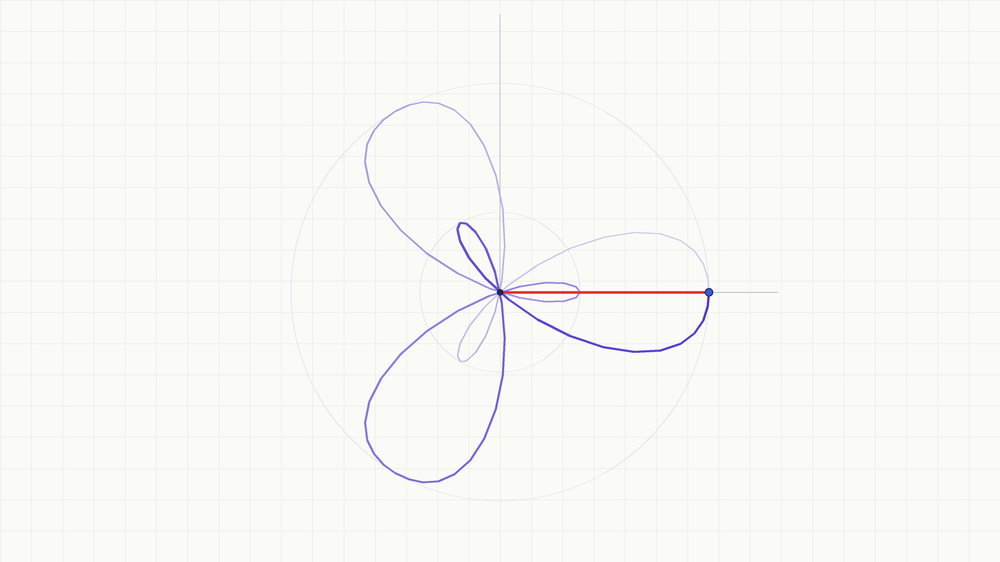

Training culture
Discipline, technical coaching, and building confidence through challenge.
Mathematician · Physics educator · Montessori teacher
My research explores how teaching and learning can help every student see mathematics and science not as subjects to get through, but as ways of understanding and making sense of the world.


01 / ABOUT
I am a mathematician and science educator interested in how students learn, experience, and engage with mathematics and physics.
My work brings together research, classroom practice, and curriculum development to make STEM learning more meaningful, accessible, and intellectually engaging.
After studying mathematics at the Università degli Studi di Torino and education in Germany through Erasmus, I collaborated with the University of Western Australia on the Einstein-First project.
I have taught mathematics at a professional high school in Italy and now teach mathematics, science, and computer science at a Montessori elementary school in Illinois.
02 / BACKGROUND
Alongside my academic and teaching work, wrestling has been a major part of my life. I competed as a freestyle wrestler at the national level and, in recent years, have coached boys and girls from my wrestling club, ages 10 to 20.
Sport has taught me that education does not happen only in the classroom. Training and being part of a team teach young people how to work with others, face difficulty, build physical and mental resilience, develop discipline and perseverance, and learn to respect both themselves and others. The commitment required to keep showing up, even when progress is slow or training is hard, has deeply shaped the way I think about growth and continues to influence how I teach and support students.

Discipline, technical coaching, and building confidence through challenge.

Club life, training, and the environment that shaped my approach to coaching.
InstagramHelping others develop a stronger relationship with effort, resilience, and progress.
03 / RESEARCH
At the University of Turin, I built an Einstein Elevator to make the principle of equivalence physically tangible. The project included apparatus design, surveys exploring teachers’ interests and concerns, lesson design, classroom implementation and data collection, and analysis of student learning data.
METHODSUNDERSTANDING
I investigate how abstract ideas in physics can become meaningful to students through experiments, thoughtful lesson design, and evidence from classroom learning.
TRANSLATION
I followed the apparatus with a teaching sequence in several Turin high schools, comparing students’ ideas before and after the intervention.
ADAPTATION
My current work with the University of Western Australia and the Einstein-First project explores how modern physics education can be adapted for Montessori classrooms and broader U.S. settings.
04 / RESEARCH JOURNEY
FOUNDATION
Universita degli Studi di Torino
DEEPENING
Universita degli Studi di Torino
ERASMUS
Research and teaching collaboration in science education
COLLABORATION
Einstein-First and physics education research
APPLICATION
Teaching mathematics and exploring student engagement in the classroom.
APPLICATION
Mathematics, science, and computer science teaching in Illinois
05 / EDUCATION
In the classroom, I give students opportunities to observe, question, test, and revise their ideas — using experiments, models, and discussion to build understanding rather than simply receive explanations.
Talk about education
precession + nutation / observe the changing angle06 / SELECTED PROJECTS
Request project listResearch and educational work grounded in classroom practice, physical experiments, and the development of accessible STEM learning.
PHYSICS EDUCATION
I designed and built an experimental apparatus to demonstrate the physical intuition behind Einstein’s principle of equivalence, then developed a teaching intervention and examined its impact in several high schools in Turin.
MODERN PHYSICS / MONTESSORI
I am collaborating with the University of Western Australia and the Einstein-First project to investigate how modern physics curriculum can be implemented and studied in Montessori classrooms in the U.S.